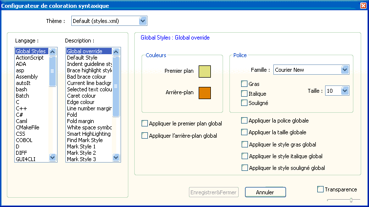
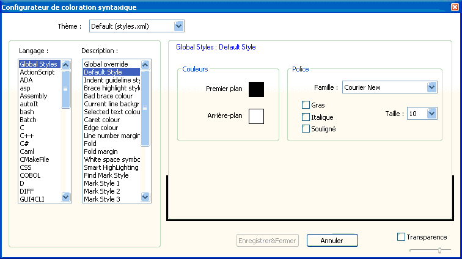

Configurateur de coloration Syntaxique
Le configurateur de coloration syntaxique est principalement utilisé pour contrôler l'apparence du texte dans Notepad++,
mais il vous permet également de modifier certains des autres aspects qui ont une couleur configurable
par l'utilisateur.

Le configurateur de coloration syntaxique a deux listes. La liste de gauche
Langage contient tous les langages déjà
connus, ainsi que d'autres articles possédant des paramètres de couleur:
- Global Styles: contrôle les couleurs d'interface utilisateur.
- Résultats: Le texte de la
fenêtre de résultats de recherche
- DOS) style: colorier le texte pour l'afficher comme dans une fenêtre de shell command.com / cmd.exe.
La liste sur la droite Style comporte tous les styles configurables pour le langage choisi.
Pour la plupart des langages, le rôle des éléments de cette liste devrait être évident. Ne figurent donc ici
que les éléments de configuration globale et quelques exceptions connues.
- Validation :
- Enregistrer & fermer : Conservez tous les renseignements style et fermer la boîte de dialogue.
- Annuler : annuler toutes les modifications apportées et fermer la boîte de dialogue. Même
action que lorsqu'on ferme la boîte de dialogue.
- Configuration du dialogue:
- Transparence permettra de rendre la boite de dialogue translucide.
Le curseur contrôle le niveau de transparence. Notez que la transparence n'est disponible qu'à partir de Windows 2000.
- Thèmes :
- Un thème de style est une collection complète des propriétés de style (voir ci-dessous), pour toutes les langages
et les paramètres globaux. À un moment donné, un thème est actif, et vous pouvez le modifier à tout moment en
utilisant la liste déroulante en haut de la boîte de dialogue. La liste est lue au démarrage à partir du
sous-dossier des thèmes, mais vous pouvez en ajouter un peu plus tard en utilisant
.
- Les propriétés de style:
- Tous les styles ont des propriétés qui leur sont assignées. Chaque style a des propriétés que les
autres n'ont pas, comme une couleur de fond. Si une propriété n'est pas disponible, elle est tout simplement grisée.
- Couleurs:
Cliquer sur la case de couleur affiche un menu popup avec les principales couleurs par défaut.
En cliquant vous changer la couleur. Cliquez sur Autres couleurs ... pour spécifier
manuellement une autre couleur. Chaque case de couleur est "cliquable droite": un clic droit impose ou supprime l'usage de la couleur dy style par défaut.
Des hachures apparaissent sur la case pour signaler l'usage de la couleur par défaut.
- Couleur de premier plan: ce sont les couleurs utilisées
pour le texte (couleur des caractères).
- La couleur de fond: ce sont les couleurs de l'arrière-plan du texte
- Polices :
- Nom de la police: La police à utiliser lors de l'affichage du texte.
Laissez ce champ vide pour utiliser la valeur par défaut.
- Taille de police: Taille de la police (en points) à utiliser lors de l'affichage
du texte. Laissez ce champ vide pour utiliser la valeur par défaut.
- Gras :
si vous souhaitez mettre le texte en gras.
- Italique : si vous souhaitez mettre le texte en italique.
- Souligné :si vous souhaitez souligner le texte .
Si un langage ordinaire est sélectionné, deux contrôles d'édition sont visibles:
- Ext. par défaut . Extensions de fichier par défaut associée à ce langage.
Si un fichier est ouvert avec cette extension, Notepad++ changera le langage.
- Ext. utilisateur définit la liste des d'extensions utilisateur éventuelles (séparées par un espace).
Notepad++ traite les fichiers possédant ces extensions comme s'ils portaint l'extension par défaut.
Quand un style est sélectionné et que lui sont associés des mots clé spécifiques, en choisir ce style
affiche deux contrôles d'édition supplémentaires:
- mots-clé prédéfinis Ce sont les mots clé utilisés par défaut par le langage.
- mots-clé utilisateur Vous pouvez entrer
vos mots-clé personnels, séparés par un espace, afin de compléter la liste prédéfinie. Le style sera également appliqué
aux mots clé de cette liste, afin de tenir compte de variantes au sein dd'un langage ou d'évolutions récentes.
langages spéciaux:
Global Styles: (styles par défaut + styles de l'interface utilisateur)

- Global Override
- Ce style peut surcharger un ou plusieurs éléments de tout autre style, et a quelques options
spécifiques. Chaque case à cocher ci-dessous, détermine une option de
manière gobale aux autres styles. Si une propriété est vide le style ne sera pas appliqué.
Pour gras, italique et souligné, il n'y a de désactivation globale que si
ces propriétés sont activées.
- Style par défaut
- Propriétés du style par défaut appliquables aux autres styles tant qu'ils ne les surchargent pas.
Le comportement en cas de propriété vierge est indéfini.
- Indent Guidline Style
- Couleurs à utiliser pour la ligne de niveau d'indentation. La ligne directrice est tracée avec des couleurs alternées,
spécifiées en utilisant l'avant-plans et la couleur de fond.
- Brace highlight Style
- Pour marquer des accolades, utilisez ce style. Toutes les propriétés peuvent être modifiées.
- Bad brace color :
- Ce style est utilisé si une accolade ouvrante n'est pas fermée ou si une accolade fermante n' a pas
d'accolade ouvrante correspondante. Le symbole non apparié est dessiné avec ce style.
- Current line background :
- Contrôle de la couleur de fond de la ligne active, si ctte option est active. Valeur vide interdite.
- Selected text colour :
- Couleur de l'arrière-plan du texte sélectionné. Valeur vide interdite.
- Cursor Colour :
- Couleur du curseur. Valeur vide interdite.
- Edge Colour :
- Couleur du bord vertical de droite. Valeur vide interdite.
- Line number margin :
- Contrôle le style de la marge de numéros de ligne. Toutes les propriétés peuvent être ajustées. Ce contrôle affecte également
la couleur de fond de la marge de signet.
- Fold :
- Contrôle la couleur des indicateurs d'escamotage (pas la marge elle-même). Ne peut pas être réglé à des valeurs vides.
- Fold active
- La couleur de premier plan pour ce style sert à tracer dans la marge
la marque du bloc escamotable contenant la ligne activze. Ne fonctionne que si le style de
marqueurs est Rectangles ou Cercles.
- Fold margin :
- Contrôles les couleurs d'arrière-plan de la marge des plis. Les couleurs d'avant- et arrière plan forment un motif en damier
à l'échelle du pixel.
- White space symbol
- Contrôle la couleur de premier plan des espaces. N'est utilisée que si l'espacement fixe est activé ou tout autre
style qui a des espaces soulignés. Valeur vide interdite.
- Smart Highlighting :
- Lorsque l'option est activée, ce style s'applique à toutes les occurrences du texte sélectionné.
- Mark style # :
- # compris entre 1 et 5. Ces paramètres définissent la mise en évidence utilisé en conjonction avec
.
- Find Mark Style :
- Lorsque Marquer les lignes n'est pas activée dans l'onglet Marquer dela boîte de dialogue Rechercher,
et si Rechercher tout est exécuté, ce style s'applique à toutes les occurrences détectées.
- Incremental highlight all :
- S'applique lorsque la recherche incrémentielle est en cours.
- Tag match highlighting :
- Lorsque l'option est activée, ce style s'applique à des paires balises qui se correspondent.
- Tag attributes :
- Contrôle la couleur de fond utilisée pour les attributs de balises. Valeur vide interdite.
- Active tab focused :
- Détermine la couleur de la ligne marquant l'onglet actif (si cette option est active). Valeur vide
interdite.
- Active tab unfocused :
- Détermine la couleur de la ligne marquant l'onglet actif de l'autre vue (si cette option est active). Valeur vide
interdite.
- Active tab text :
- Couleur de premier plan du texte d'un onglet actif. Valeur vide interdite.
- Inactive tabs :
- Laouleur de premier plan est celle du texte des onglets inactifs.
La couleur de fond est utilisée pour le fond des onglet inactifs si Assombrir les onglets inactifs est activé.
Résultat de la recherche
Voici les paramètres modifiables de l'apparence des résultats de recherche affichés dans la
fenêtre de résultats de recherche :
- Default :
- Tout le texte dans la fenêtre auquel aucun autre style ne s'applique.
- Search Header :
- La première ligne de la fenêtre de résultats, qui contient les statistiques de la recherche.
- File Header
- : Affiche le nom du fichier et le nombre d'occurrences dans ce fichier.
- Line number :
- Les numéros de ligne cliquables qui mènent droit au résultat de recherche dans le fichier.
- Hit Word :
- Le résultat de la recherche lui-même.
- Selected Line :
- Tout texte sélectionné
- Current line background colour :
- Couleur de fond de la ligne courante. Faites un clic droit de la couleur pour supprimer cette mise en évidence.
Dos Style
Le "langage" DOS utilise une police spéciale appelée MSLINEDRAW pour permettre l'usage des caractères semi-graphiques ("box-art")
dans es fichiers utilisant un ancien encodage DOS. Vous ne pouvez contrôler la couleur nidu fond ni du texte. Tout le texte
(reçoit ce style.
Les propriétés de police sont celles du style par défaut (à l'exception du nom de la police, qui est toujours MSLINEDRAW).